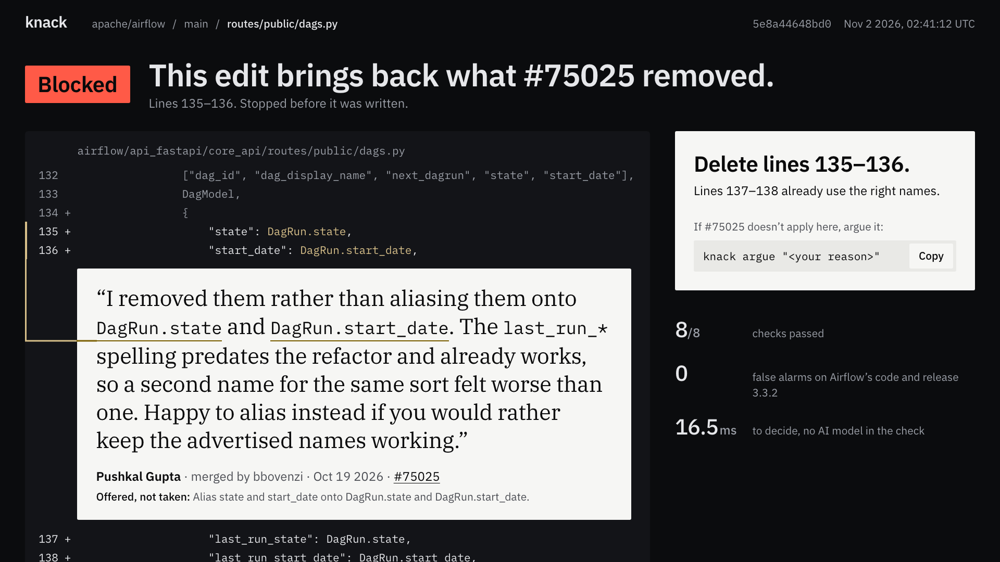

Your AI agent never read the PR where you said no. Knack did.

From a pull request to a stopped edit
It reads your pull requests.
It proves each “no” as a rule.
It stops the agent that repeats it, with the person’s words.
Meta’s models, and what each one does
| Model | Where it runs | Its job | In the recorded traces |
|---|
Every number here has a command
The demo
Demo video slot, 16:9. Not recorded yet.